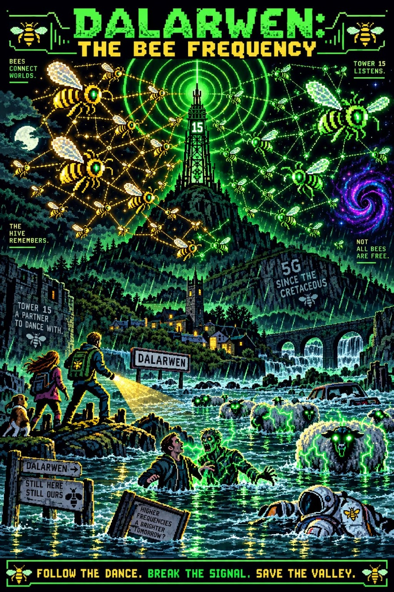
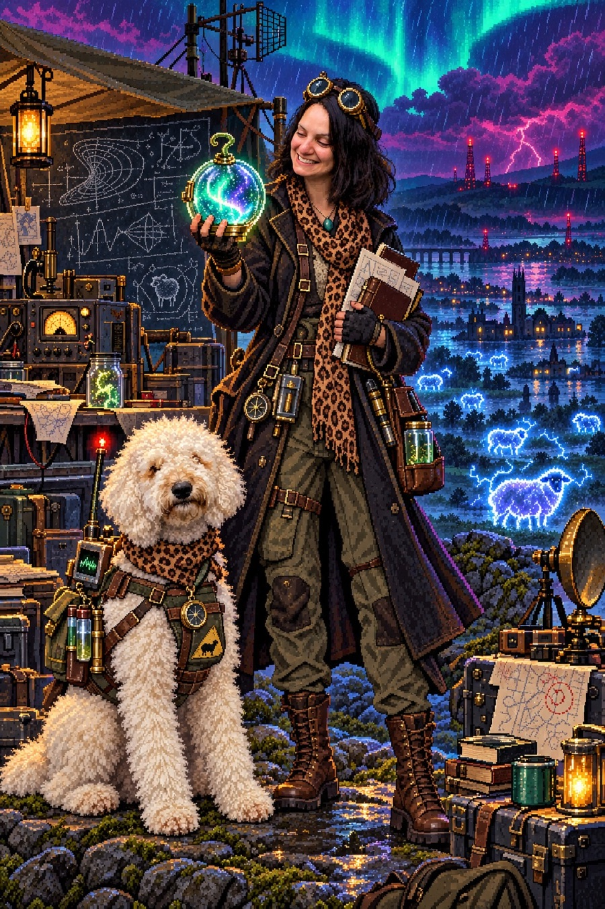
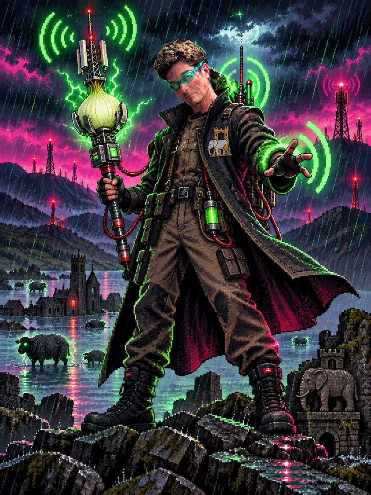

Trending in the Valley

The Bees: Band B Sam Is Leaving (S1)
Sam Is Leaving (S1)
Void Scholar & Lemon
The ConductorNEIL
You're 1% of the way through. You've been 1% of the way through for three years. Everyone in your household is also watching this. It is the most-streamed title in the valley. It does not resolve.

The Bees: Band BSam Is Leaving (S1)
Void Scholar & Lemon
The Conductor